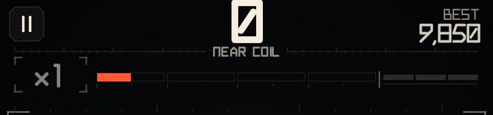
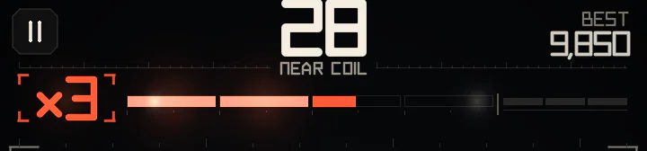
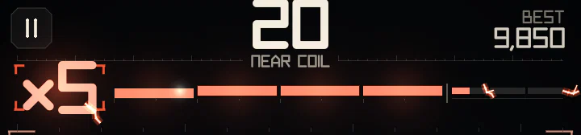
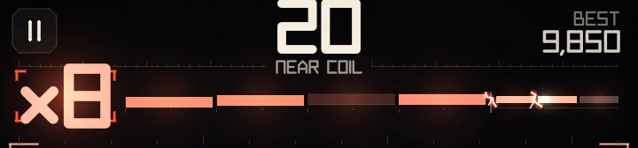
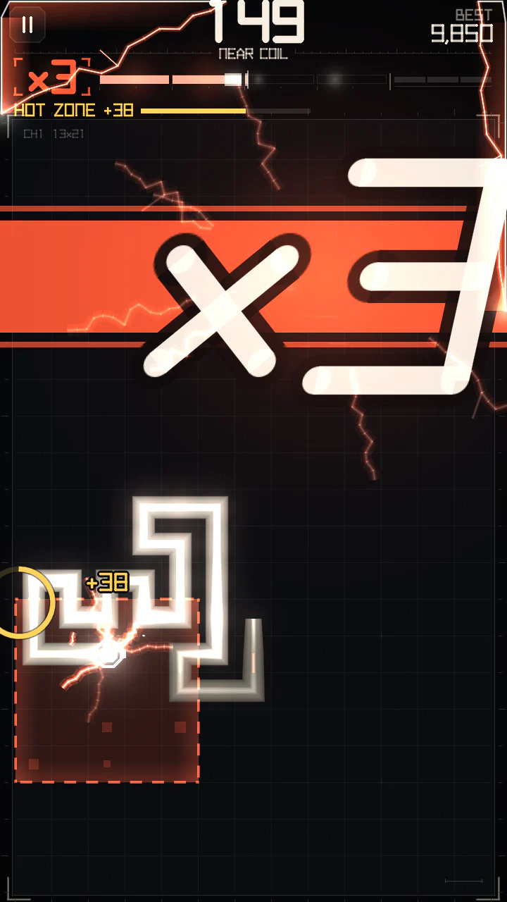

Charge and multiplier
The meter above the board is the heart of the score. It sets the multiplier from ×1 to ×8, and the multiplier multiplies every point.
The meter
The meter is split into segments, one per multiplier step; filling a segment raises the multiplier by one. Play safe and it drains; keep playing close and it stays up.




How the multiplier climbs
Each step up the multiplier is worth more and is harder to hold:
| Multiplier | Pace | GRAZE effectiveness | Charge decay |
|---|---|---|---|
| ×1–×2 | Calm | High | Slow |
| ×3–×4 | Brisk | Reduced | Moderate |
| ×5–×6 | Fast | Low | Fast |
| ×7–×8 | Very fast | Very low | Very fast |
Regular grazing is enough to build the early multiplier levels. At higher multipliers, risky maneuvers (SQUEEZE, THREAD, NEEDLE) and Circuit Events become the main way to keep the multiplier alive.
What builds charge
From small to big:
- Close calls and skims — a little each, and less the higher you are. Great for ×1–×3, not enough on their own beyond that.
- Tight steps inside a one-cell gap — a little per step.
- Maneuvers — SQUEEZE, then THREAD, then NEEDLE: a big boost that does not shrink at high multipliers, and more in a chain.
- Circuit Events — the biggest boosts. Completing a RELAY always lifts you at least one multiplier step (up to ×5).
- Modules — a PHASE hop, the body cut off by CUT, and everything during SURGE (+40% charge).
Some Campaign levels scale all gains (e.g. "charge 130%").
Keeping it alive
- After a gain the meter holds for a moment, then starts to drain. A maneuver or an event buys a longer hold than a close call.
- It drains slower while you stay near a wall of body or structures (setting up the next move) and faster in open space.
- Inside a gap the meter never drains. Inside a HOLD ZONE neither.
- Levels are lost one at a time, with a short breather after each drop — a quick move can still save the run.
Keeping a high multiplier means chaining: a close call or maneuver every couple of seconds. Skimming along a lane keeps the meter steady even when each skim adds little.
Machine stages


The look of the board follows the multiplier in stages, so you can feel your level without reading the meter:
- ×1 — calm, clean board.
- ×2 — the stage engages: a relay double-blink.
- ×3–×4 — charged: heartbeat pulses run down the body, surges race round the screen edges.
- ×5 and up — overload: white-hot core, sparks and arcs between neighbouring segments, flashes on all edges.
Every upgrade slams a giant ×N into the part of the board away from your head. Dropping a stage plays a power collapse: the edges go out and a dark wave runs from head to tail. All of this is cosmetic and the same in every theme; Settings can reduce shake and flashes.
Hunger

Close play against your own body fades if you go a long while without eating: for some time after the last node it pays in full, then its value falls steadily to zero. The next node brings it back in full at once.
Hunger reduces the points of close calls and of SQUEEZE / THREAD / NEEDLE against your body. It does not touch:
- charge (the multiplier still climbs);
- nodes, every Circuit Event payout and PHASE;
- close calls against pylons, posts, wires and insulators;
- anything inside a hot zone, and levels without nodes.
The game shows it: the node starts to ripple its brackets (faster and brighter the hungrier you are), body arcs dim, and the first close call at half value or less says CLOSE CALLS FADING - EAT TO RECHARGE. Normal play eats far more often than this and never notices; it exists so that circling along your own body forever does not pay.
Exact thresholds, drain per step and hold times: Advanced mechanics.